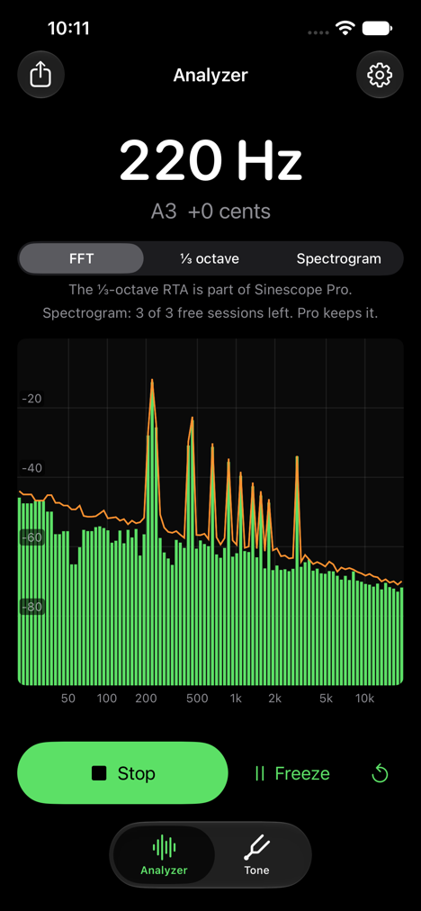

For iPhone · free download · one-time Pro unlock
See what you hear.
Sinescope shows the sound around you as a live spectrum, names the strongest frequency and its musical note, and plays test tones, sweeps and noise for checking speakers and rooms.
No account, no subscription. Sound is analysed on your iPhone and never recorded or sent. The free version shows one small banner ad; Sinescope Pro removes it.

Free
- Real-time FFT spectrum from 20 Hz to 20 kHz with peak hold, freeze and touch-to-read.
- Strongest frequency with note name and cents.
- Pinch to zoom into any range.
- Tone generator: sine, square, triangle and sawtooth, with semitone and octave steps.
Sinescope Pro, one-time purchase
- Frequency sweeps from 20 Hz to 20 kHz.
- Pink and white noise.
- ⅓-octave real-time analyzer with Fast, Slow and running averages.
- Spectrogram of the last 11 seconds.
- Export the spectrum, RTA or spectrogram as CSV and PNG.
Each Pro tool can be tried 3 times for free.